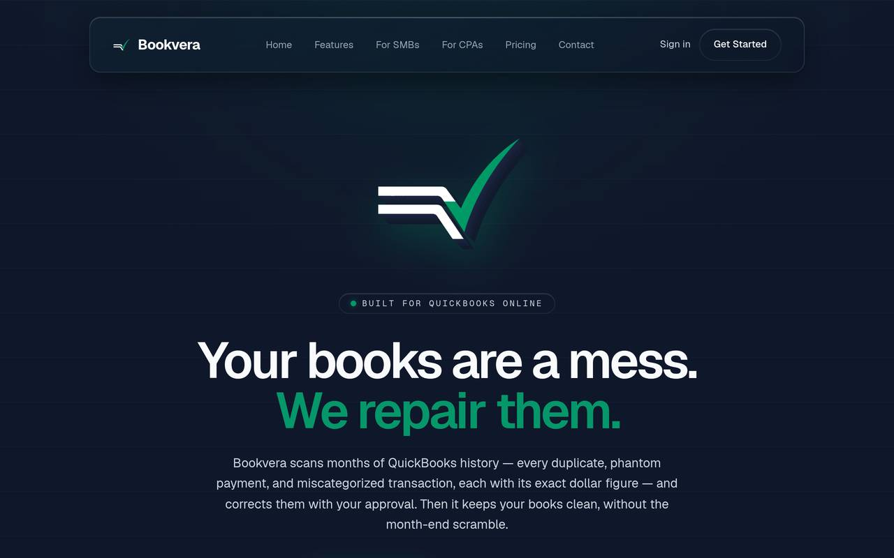

EXP-03
Bookvera
An AI bookkeeping plugin for QuickBooks Online that keeps small-business books clean in the background.
IN DEVELOPMENT

BUILT
A plugin for QuickBooks Online (not Desktop) that categorizes transactions, catches duplicates and anomalies, and flags problems before they cost real money. Built with Cline and DeepSeek. The marketing site is live, and the product runs a continuous improvement loop: it is always being worked on until I say stop.
WHAT BROKE
The launch blockers are named, not hidden. The Intuit app review is not passed yet. Stripe is still in test mode. Receipt-image attachments to QuickBooks are blocked by a fault on Intuit’s side. And the name itself: Bookvera is trademark-screened, not cleared.
HOW I JUDGE IT
Tested against real messy books, starting with my own: duplicate income entries, phantom transactions, categories that meant nothing. The bar is whether it catches what a human bookkeeper would catch, before month-end, without being asked.
RESULTS
Pre-launch by the checklist above, and I will not call it launched until the Intuit review passes. The marketing site is live and optimized to be cited by AI search, so the product is findable the day it clears review.